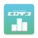

<mat-toolbar color="secondary">
  
  <button mat-button routerLink="/daily">Daily</button>
  <button mat-button routerLink="/monthly">Monthly</button>
  <button mat-button routerLink="/global">Global</button>
  <button mat-button routerLink="/globe">Globe</button>

</mat-toolbar>
<router-outlet></router-outlet>
<a href="https://trackmania.io">LOVE</a>
